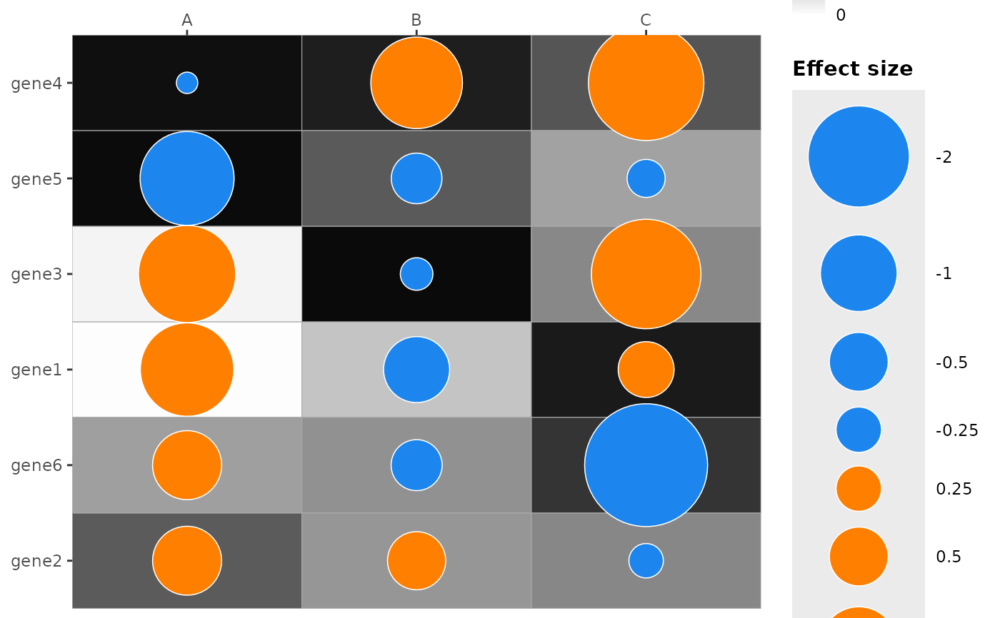
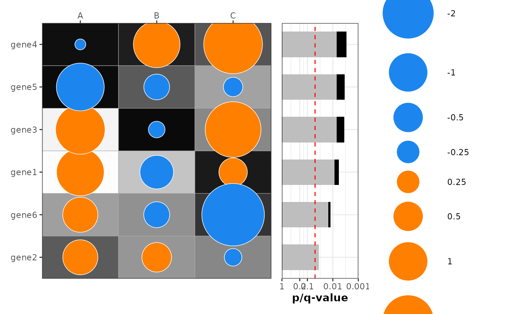

Create a dotmap showing effect size (dot size & color) and p-value (tile fill)
Source:R/plot_dotmap.R
plot_dotmap.RdA combined tile + point "dotmap" that visualizes an effect (size and direction) and a p-value (tile fill). The function returns a ggplot object or a patchwork composition when a combined p-value barplot is requested.
Usage
plot_dotmap(
data,
x,
y,
effect,
p,
dot_size_vals = c(-2, -1, -0.5, -0.25, 0.25, 0.5, 1, 2),
dot_size_labels = as.character(dot_size_vals),
dot_range = c(5, 30),
palette = c(positive = "darkorange1", negative = "dodgerblue2"),
xlab_angle = 0,
mlog10_transform_pvalue = TRUE,
fill_limits = NULL,
legend_pvalue_title = NULL,
legend_dotsize_title = expression(bold("Effect size")),
add_combined_pvalue_barplot = FALSE,
combine_pvalue_method = c("CMC", "fisher", "MCM", "cauchy", "minp_bonferroni"),
sort_by_pvalue = TRUE,
only_show_top_sig = NULL,
...,
patchwork_widths = c(3, 1)
)Arguments
- data
data.frame or tibble containing the plotting variables
- x
Character; name of variable in
datato use for x-axis/columns- y
Character; name of variable in
datato use for y-axis/rows- effect
Character; column name of numeric variable in
datato use for dot size and color (direction)- p
Character; column name of numeric variable in
datato use for tile fill (p-value)- dot_size_vals
Numeric vector of reference effect values used for the size legend (signed to indicate direction)
- dot_size_labels
Character vector of labels for the size legend; must have same length as
dot_size_vals- dot_range
Numeric(2) range of point sizes (min, max)
- palette
Named character vector with elements "positive" and "negative" specifying dot fill colours for positive/negative effects
- xlab_angle
Numeric angle to rotate x-axis labels (degrees)
- mlog10_transform_pvalue
Logical; when TRUE the fill uses -log10(p) instead of raw p
- fill_limits
Numeric(2) or NULL; limits for the fill scale (c(min, max)). If NULL a sensible default is used (c(0,3) for -log10(p) or c(0,1) for raw p)
- legend_pvalue_title
Character or expression or NULL; override title for the p-value (tile fill) legend. If NULL an automatic title is used.
- legend_dotsize_title
Character or expression; title for the dot-size legend
- add_combined_pvalue_barplot
Logical; when TRUE adds a combined p-value barplot to the right of the dotmap (requires patchwork)
- combine_pvalue_method
Character; method for combining p-values in the barplot. One of: "CMC", "fisher", "MCM", "cauchy", "minp_bonferroni". Defaults to "CMC".
- sort_by_pvalue
Logical; when TRUE (default) rows (levels of
y) are sorted by the combined p-value (ascending). Requires p-values present per group.- only_show_top_sig
Numeric(1) or NULL; when adding the combined p-value barplot, if this is a positive integer then only the top X most significant rows by combined p-value are shown (default NULL, show all)
- ...
Additional arguments passed on to
plot_pvalue_barplot()whenadd_combined_pvalue_barplot = TRUE- patchwork_widths
Numeric(2); widths passed to patchwork::
wrap_plots()when adding the combined p-value barplot (default c(3, 1))
Value
A ggplot2::ggplot object when add_combined_pvalue_barplot = FALSE,
or a patchwork composition object (from patchwork) when
add_combined_pvalue_barplot = TRUE.
Details
The tile fill encodes p-values (optionally transformed as -log10(p)), while
the overplotted points encode effect size (size) and direction (fill color).
NA values for effect are marked with an "×" symbol. When a combined
p-value barplot is requested the function groups by y and computes the
combined p-value using combine_pvalues(); the combined panel is aligned
vertically with the main dotmap.
Examples
set.seed(42)
genes <- paste0("gene", 1:6)
df <- expand.grid(col = c("A", "B", "C"), row = genes, stringsAsFactors = FALSE)
df$effect <- rnorm(nrow(df), mean = 0, sd = 1.2) # realistic effect sizes
df$mlog10_p <- runif(nrow(df), min = 0, max = 3) # -log10(p) between 0 and 3
df$p <- 10^(-df$mlog10_p)
df$row <- factor(df$row, levels = rev(genes))
plot_dotmap(df, x = "col", y = "row", effect = "effect", p = "p",
mlog10_transform_pvalue = TRUE)
#> Scale for size is already present.
#> Adding another scale for size, which will replace the existing scale.
#> Scale for y is already present.
#> Adding another scale for y, which will replace the existing scale.
#> Warning: No shared levels found between `names(values)` of the manual scale and the
#> data's shape values.

# Add Fisher's combination pvalue barplot on the right which combines p-values across columns for each row category
plot_dotmap(
df,
x = "col",
y = "row",
effect = "effect",
p = "p",
mlog10_transform_pvalue = TRUE,
add_combined_pvalue_barplot = TRUE,
combine_pvalue_method = "CMC"
)
#> Scale for size is already present.
#> Adding another scale for size, which will replace the existing scale.
#> Scale for y is already present.
#> Adding another scale for y, which will replace the existing scale.
#> Scale for y is already present.
#> Adding another scale for y, which will replace the existing scale.
#> Warning: No shared levels found between `names(values)` of the manual scale and the
#> data's shape values.
